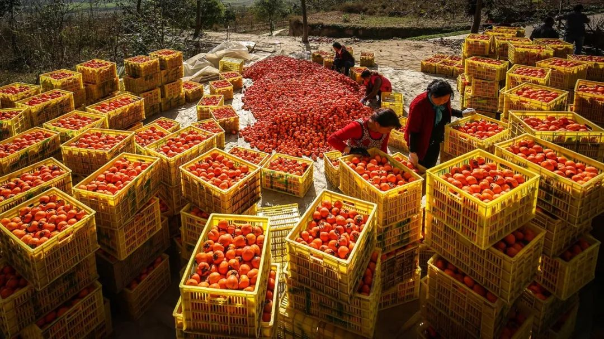
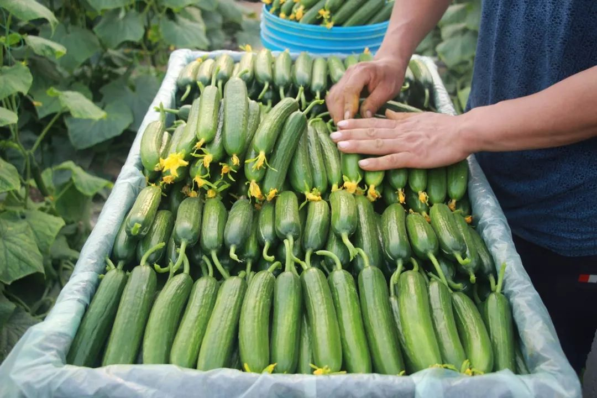
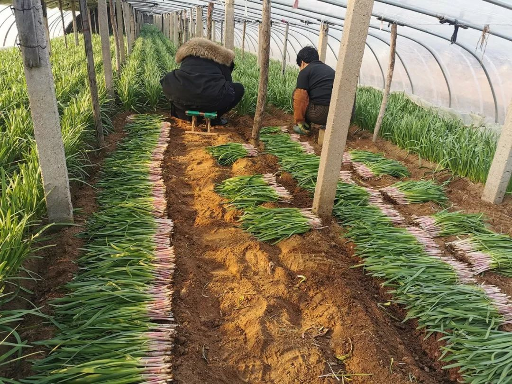
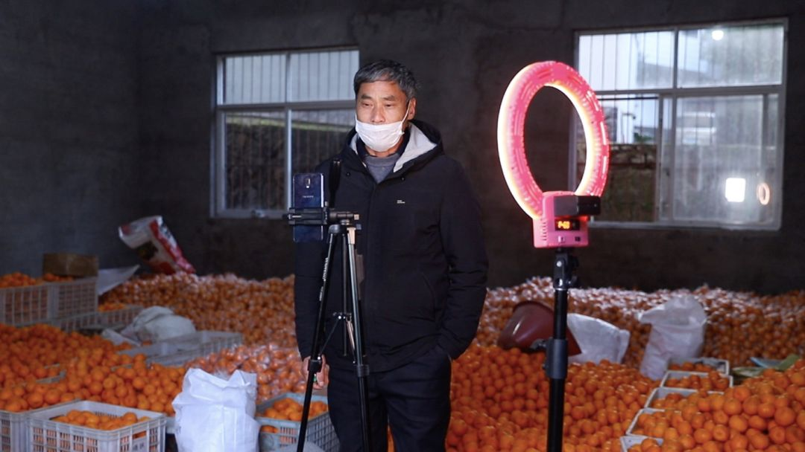
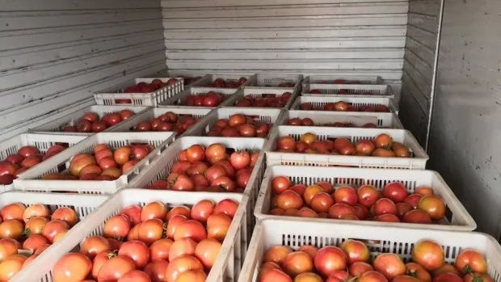

湖北出台财税支持政策，农业生产亟待恢复
原文链接 备份链接 有蔬菜农业生产基地和企业在接受南都周刊记者采访时表示，受新冠肺炎疫情影响，田里蔬菜无法及时收割与销售，焦心未来收入存在中断风险。 _ 记者| 王晓珊 实习生 | 甘笠男 编辑 | 盛倩玉 黄冈市黄梅县大河镇袁夫稻田 水 …

此地不宜久留，双方远远点个头，就匆匆离开了。「我们和农民像一对情侣，农民想卖，我们也想买，阻隔我们不能见面的就是这次疫情，但我们内心还是相互吸引的（笑）。」
文｜****苏铁
编辑｜****萧祷
「砸手里了」
李肖林推着一辆三轮车，车上是一筐筐装得满满当当的黄瓜，刚摘没两天，还是翠绿的。他把车子推到村里扔垃圾的沟旁边，把黄瓜从车上搬下来，统统倒进了沟里。
过完年之后四五天，他估摸着一共倒掉了上万斤黄瓜，损失有几万块，他心疼又难受，「倒的都是钱，都是血汗钱。」他所在的山东烟台市西埠前村村民靠种植黄瓜为生，家家都倒，沟里的黄瓜堆成了高山，邻居家的媳妇儿躲在家里偷偷地哭，村民之间碰了面，不是唉声叹气就是沉默，李肖林感觉「整个村子都死气沉沉的」。
正月本来是黄瓜的销售旺季，销量大，售价高，夏天卖一两块钱一斤，正月能卖到四五块，这个月的收入能占到全年的一半以上。李肖林盼着这个春节能多卖一些，他种了四个大棚的黄瓜，每天成熟的大约有两千公斤，他采摘下来，一筐一筐码好放进仓库，怕黄瓜受冻，还小心地一层层盖上棉被，等着蔬菜商进村子来拉走。然而，一场突如其来的疫情摧毁了他所有的念想。
过完大年三十，李肖林就发现村口的推拉门上了锁，本村人进出需要登记，外村的人和车辆一律不让进，往年此时来去熙攘的蔬菜收购商也被关在了门外。
「收购商进不来，菜农卖不出去，黄瓜就烂在家里了。」李肖林说。他想了很多办法，在村子里摆地摊，联系城里的超市，但前面的方法卖不出去，后者想尽办法还是进不来村。大棚里的黄瓜还在生长、成熟，瓜翠生生的，卖相很好，一根一根挂在枝头，李肖林看着心急如焚，他甚至不知道应不应该再采摘，摘下来吧，卖不出去，往家里拉还浪费人力，只能就近找地方倒掉。不摘吧，这些瓜就要老了，再长下去影响下一茬黄瓜的生长。「你一点办法都没有，就眼看着那么长时间的心血没了。」他说。

李肖林家滞留的黄瓜图源受访者
在李肖林焦头烂额时，150公里外的大成家村村民成硕也陷入了类似的困境。大年二十八的时候，他发现村口拉了一条红线，不让人过。没几天，红线换成了一辆车，彻底不让人走了。几个干部在村口搭了个小棚子，轮流值班，一人守一天一宿，吃睡都在棚里，不让外人进。
大成家村靠种植韭菜为生，成硕家里种了四亩韭菜，打算年后割头茬，往年都是本地小商贩进村收韭菜，有时候故意压价，拖欠菜钱也是常事儿，但这是村里出售韭菜的唯一渠道，村民老实，「稀里糊涂也就卖了。」成硕计划着，一亩地一茬产两三千斤，分两茬卖个四五万块钱就挺满意了，这笔钱是这个农村家庭一年的全部收入，但那条唯一的渠道在年后被彻底切断了。
韭菜和别的蔬菜不一样，长好了要赶紧割，长太高叶子会成排倒下，再也起不来，意味着这茬韭菜全完了。割了也很为难，韭菜潮湿，根上培土也放不了两天，卖不出去就开始烂。
成硕记得，这茬韭菜从去年5月份就种下了，7、8月份长出翠绿的小苗，他一株一株地把小苗移植到大棚里，细致地施肥、浇水……这些金钱和时间看上去都要血本无归了，家里被一片愁云惨雾笼罩，吃年夜饭的时候，全家人闷声不响，食不知味。五十多岁的母亲着急上火，满嘴都是泡，在床上躺了好几天。
村里有比成硕家更严重的，一家种了十多亩的韭菜，割完了卖不出去，放在家里白白腐烂，「一年就没收入了，家里人天天哭。」成硕说。整个村子都陷入了绝望，「就觉得这茬韭菜全完了，就砸手里了。」

无人问津的韭菜 图源受访者
「孤独的行者」
转机是在一周之后出现的。
淘宝吃货项目组发现了李肖林和成硕们面临的困境，而全国各地还有无数个「李肖林」和「成硕」。为了帮助这些农民，淘宝吃货仅用12小时就上线「吃货助农」频道，首批选择了山东、四川、浙江、辽宁等六省的十款滞销优质农产品。活动上线的前一天，负责蔬菜行业运营的新人、90后江西女孩龚梦倩一整天都在和蔬菜行业的商家打电话，沟通产品上线的事情。
她找到梦强旗舰店，这家店去年线上营收做到了1个亿。创始人郭靖和成克龙是两位三十出头的年轻人，出身农村，店里主要卖水果和蔬菜，郭靖本来想着，过年的时候终于能歇几天了，但疫情打乱了全部的计划。
龚梦倩问郭靖，问他「敢不敢试一下绿叶菜」。以前他们店里只有西红柿、南瓜或地瓜等易储藏、运输难度小的农产品，对于一些运输难度较大的绿叶蔬菜，他们是不敢尝试的。
这次，郭靖说了「敢」。他的父母种黄瓜，也遭遇了滞销的困境，他眼看着超市的黄瓜从4块一斤涨到了10块，「其实供应端没有问题，需求端也没有问题，就是中间的那条运输链断了，我感觉到非常难受。」郭靖家里种菜、自己卖菜，所以有两重身份，「既想让和我一样在城市居住的人能吃上菜，又想让家里的父母，能把菜卖出去，所以今年就下决心一定要去把这个事去做一做。」
他们开始了一场24小时抢菜的战役。
他和成克龙筛选出了几个滞销的蔬菜大品类，包括黄瓜、西红柿、萝卜、白菜、韭菜等，然后开着5米长的卡车到烟台方圆200公里的村子里找货源。他们的店此前做过水果出口，资质齐全，在经过了复杂的审批流程之后，终于从当地政府那拿到了一张珍贵的通行证。
成硕第一次见到成克龙的时候，他来村子里看韭菜，看了几家之后，他给大家介绍了淘宝的活动，然后说：「你们割吧，韭菜我们全收了。」成硕母亲是村里的干部，听完马上去村支部用大喇叭做广播，「有人来买韭菜了！」村里人乌泱乌泱就从家里跑出来了。
成硕记得，那会儿的村民们已经不指望能挣多少钱了，哪怕赔钱也想卖出去，别放在家里烂了心疼。但成克龙没压价，每斤收购价比线下收购还多了一两毛，他反复跟心急的村民说，「大家别着急，都会给大家带出去的。」
收到消息的那天，成硕家里的阴霾一扫而空，他的母亲中午做了一桌丰盛的菜，有油泼鱼和烩菜，「他们（成克龙）真的是帮大忙了。」
从过年起，郭靖和成克龙的一天都是从凌晨三点开始，起床第一件事情是打电话，跟菜农挨个确认菜准备好了没，如果准备好了，就以最快的时间穿衣服洗漱，吃点昨晚的剩饭或者煮个泡面，开着卡车出发了。
即使拥有通行证，这趟旅程也常常跟游戏过关一样艰难。在高速路口常常遇到拦截，不让他们出入；种菜的村子有时候连成一片，最里面的那个是最艰难的，「你要过好几道卡，其中有一道卡过不去的话，那你就过不去了。」郭靖最难受的事情是，农民打电话来，告诉他，「菜运不出来了。」对方语气焦灼，他也难受，但都没什么办法。
在一些不熟悉的村子，他们常常受到敌意和驱赶，只能把卡车停得远一点。执行封锁措施的村民的复杂心情，郭靖也能感觉到，「他们既欢迎我们又不欢迎我们，不欢迎是怕传染，欢迎是因为，我们是来解决他们燃眉之急的，不把菜卖掉，春天怎么活？」
后来，他们想到的解决办法是，让村民把菜放到村口，成克龙上去称斤、计算，从支付宝上把钱转给他们，然后把那些菜筐搬到卡车上。此地不宜久留，双方远远点个头，就匆匆离开了。「你就感觉跟地下工作者似的。」郭靖笑着说，「我们和农民像一对情侣，农民想卖，我们也想买，阻隔我们不能见面的就是这次疫情，但我们内心还是相互吸引的（笑）。」
李肖林的村子一开始也不让成克龙进，成克龙去乡政府做了各种疏通和努力，终于能把车开进村，李肖林家看着家里的黄瓜被卡车运走时，长长出了一口气，如释重负。本来，家里的老人过年连菜都舍不得买，现在也舍得买些鱼和肉了。
一天下来，郭靖和成克龙要跑大约20多个村子，每天上千公里的路程，拉回七八吨的蔬菜，把菜筐搬到车上的动作要重复上千次。他们没有时间吃饭，喝下去的水在高强度的劳动中基本被消耗殆尽，几乎不怎么上厕所。下午就要开始返回，他们得抢在快递车来之前把东西送回去，开车的时候，郭靖能感觉到眼睛发酸发疼，他只能靠大量喝红牛提神，实在撑不住了，只能停车缓一会儿，下车呼吸几口冰冷的空气，挨一会儿冻，清醒了，继续往前开。
路上几乎没有什么车，城市像是被按下了暂停键。郭靖能看到的，只有警车、救护车、工程车，偶尔还有消防车。郭靖不喜欢这些车，它们的独自出现像是代表着某件糟糕的事情发生了，「我们不愿意看到这些车，我们更愿意见到的是私家车熙熙攘攘的，和普通人在一块开车。」
那个时刻，他会感觉到孤独，「以前总感觉生活在一个喧闹的大都市，现在就感觉路上就你自己在这儿跑，就像个孤独的行者，离别人很近又很远，也不知道这疫情会持续多久。」
支撑他们的，也许是一些不起眼的瞬间。成克龙记得，有一次他去寿光收油菜。把一个农民的油菜搬到车上之后，双方告别，农民60多岁了，衣着朴素，他用一种几乎是乞求的眼神望着成克龙，「你下次什么时候来啊？我家里还有很多油菜，再长就老了，不值钱了。」成克龙心中酸楚，安慰他：「我很快就又来了，你放心。」
「我就想赶紧帮他们把菜卖出去，尽最大努力帮一帮他们。」成克龙说。

成克龙在韭菜地里用泡面填饱肚子 图源受访者
「撑久一点，撑到疫情过去」
把菜运回来并不是结束。平台为了保证消费者的权益，要求商家做到48小时内发货。
韭菜需要垫报纸吸水防潮，黄瓜要用珍珠棉包起来，西红柿得塞进塑料充气柱，土豆得一个一个套网套……尽管郭靖已经把30人的团队扩展到了100多人，还是不够用。按照疫情时期的管理措施，他们不能聚集在一起工作，只能三五个人分成一个小组打包。
更大的困难是纸箱厂大多没有复工，他们到处搜罗各种各样的纸箱，纸箱厂的库存、卖给酒厂的、牛奶厂的箱子，只要是未使用过的干净箱子，他们来者不拒。在接受《人物》记者采访时，成克龙已经找了一天的箱子，但成果寥寥，采访并未持续太久，他便匆匆挂掉电话，继续去寻找。
一些农民知道他们人手不够，让郭靖把打包的材料运过来，「我们帮你打包，你直接拉走就行了。」郭靖试图支付农民打包费，一个件一块钱，农民都没要。有些农民卖完了自己的菜，还会帮他找其他货源，半夜11、12点还在帮他联系。「以前来来回回大家就是买卖，但这次你突然感觉到在这个非常时期，互相帮助的那种朴实无华的温暖。」
自「吃货助农」上线之后，郭靖和成克龙店里的订单量迎来了一次比双十一还要疯狂的井喷，以前每天蔬菜的订单有三四百个，现在最多时一天能卖十万多单，每天发货量接近一百万斤，那来自于在疫情封闭管控措施之下无法出门买菜的人们，「你就感觉，大家为了吃口蔬菜都抢疯了。」郭靖说。
龚梦倩也看到，这段时间整个淘系蔬菜类中小商家的成长非常快，线上卖的蔬菜通常不是五斤就是三公斤，组合装、周期购的方式很受欢迎。在她的沟通下，这些商家开始拓展更多的品类，像香椿之类的时令菜有更多的商家去选择。
但商家并没有高价出售这些来之不易的蔬菜，李肖林去梦强旗舰店的页面看过，「他们销量很高，但卖的价格不高，很亲民。」郭靖解释了原因，依他的经验，每年也就这几天菜价涨高，「我们知道它是短暂的，过几天会回落到一个正常值，你就为这四五天调个高价，不是那个事。小商小贩你可能会随着行情去调价格，但做大宗货品的时候，少赚一点或者略亏一点还是能行，实在撑不住人家才会涨，我现在还能撑住。」他说。
郭靖每天只能睡四五个小时，回到家里在沙发上一闭眼就睡过去了，连衣服都来不及脱。他常常觉得疲惫，四肢酸疼，但想着还得撑下去，「你就是跟时间赛跑，跟体力赛跑，你说你没有那么多体力，不行，你就得挨着。你能从农民手里合法地把菜拿过来，你能供应上给大家菜吃，你有这个能力，你就得去做，要是以后身体实在撑不住了，那就不干了，但我现在还能干就希望能撑久一点，撑到疫情过去。」
自淘宝助农上线一周时间以来，卖出了1.8万吨农产品。2月13日，淘宝宣布设立10亿规模的爱心助农基金，帮助卖光全国滞销农产品，并实施助农10项措施，包括开通「爱心助农专线」（钉钉号：aixinzhunong）收集滞销农产品信息、在淘宝上推出农产品特卖系列专区、增加对核心产地农产品的集中采购、降低农产品在平台的销售成本、帮助涉农商家免费开通淘宝直播等。
全国上千个蔬菜瓜果大棚在这一天变身淘宝直播间，政府代表、直播大V也上阵帮着吆喝。龚梦倩说，爱心助农专线公布后，钉钉也已经爆了，接到了来自全国各地1500多个求助销售滞销农产品的请求。放下电话，她要继续战斗去「卖菜」了。

衢州柑橘上直播 图源受访者
她时不时打电话跟进郭靖和各商家发货的情况，叮嘱一定要保证质量。在她眼里，助农的产品，每一笔订单，背后都可能是一个家庭的生活所需，也多多少少是对农民的一份心意。
淘宝吃货内部估算，每销售2000斤农产品，就可以帮助一户农民筹备到开春复耕所需费用。在首批登录「吃货助农」频道的商家中，还有不少商家都为武汉疫情捐赠过蔬菜和水果。淘宝吃货也向外界呼吁，希望有更多消费者通过下单的方式帮助遭受滞销之苦的农民。
李肖林最近在和村民们商量，本来这些黄瓜肯定是砸了，结果还能卖钱，他们心中感激，想着都拿一部分蔬菜或者钱出来，支援武汉，他们正在联系物流车，「物流车有了的话，我们立马就能捐蔬菜的捐蔬菜，能捐钱的就捐钱。」
成克龙想着，疫情结束之后，自己要去看一看自己帮助过也帮了自己的农民。过去的那么多天里，大家戴着口罩，远远点头，熟悉对方的声音，但却不知道对方长什么样，连握个手都不敢，「我就是想看看他们。」郭靖则想着，疫情结束，生活恢复正常了，自己也不用再这么紧绷，一定要出去走走，「透透风，串串门，健健身，带上小孩上个游乐场去。」他希望到那个时候，大家都能摘下口罩，过上正常的生活。

图源受访者
没看够？
长按二维码关注《人物》微信公号
更多精彩的故事在等着你

原文链接 备份链接 有蔬菜农业生产基地和企业在接受南都周刊记者采访时表示，受新冠肺炎疫情影响，田里蔬菜无法及时收割与销售，焦心未来收入存在中断风险。 _ 记者| 王晓珊 实习生 | 甘笠男 编辑 | 盛倩玉 黄冈市黄梅县大河镇袁夫稻田 水 …
原文链接 备份链接 唯一的方式就是隔离，继续隔离，将隔离进行到底。 口述 | 池 莉 **整理 | 何映宇** 今天只有一个强烈的呼吁——已经呼吁多天了，要采取切实隔离措施与行动到社区！人们为了买食品蔬菜还在超市拥挤，极容易造成再次感染传 …
原文链接 备份链接 二月初三。 天气好到令人惊讶，中午温度快达20度了吧？开着暖气已有热的感觉。但到晚上，又突然下雨，很反常也很怪异。反正不能出门，看手机便成每日的必修课。 一早看到几个视频，真是有话想说。视频有两类：一类是外省的捐赠蔬菜 …
原文链接 备份链接 二月初三。 天气好到令人惊讶，中午温度快达20度了吧？开着暖气已有热的感觉。但到晚上，又突然下雨，很反常也很怪异。反正不能出门，看手机便成每日的必修课。 一早看到几个视频，真是有话想说。视频有两类：一类是外省的捐赠蔬菜 …
原文链接 备份链接 *************▲************* 2020年1月28日，武汉协和医院感染科病房。 （新华社/图） 全文共5066字，阅读大约需要7分钟。 从那时起，护士们戴的不再是常规的护士帽，换成了另一种蓝 …